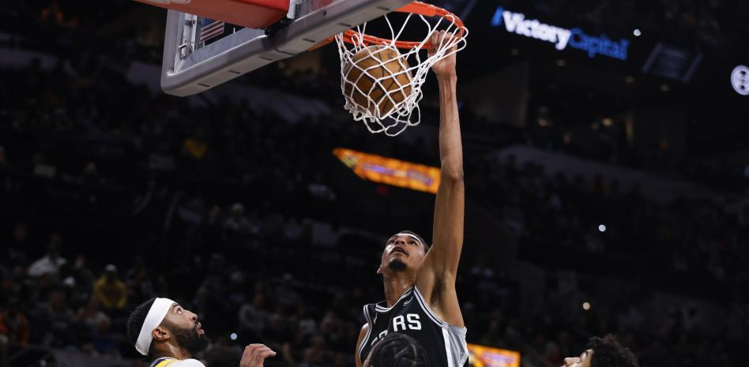

Tanto el genio esloveno como El Rey dieron rienda suelta a todo su talento para concluir ambos con 33 puntos.
Doncic añadió 17 asistencias y LeBron sumó 9 asistencias y 8 rebotes para acercarse al triple-doble. Fue un
toma y daca constante, uno en el que los Mavericks empezaron dominando, los Lakers remontaron y los de Texas
finiquitaron siendo mejores en los últimos minutos hasta el 127-125 final
«No sé cómo jugué. Hoy dormí muy poco y me duele todo. Me estoy haciendo viejo. Pero obtuvimos dos victorias
consecutivas, lo cual es sorprendente, especialmente contra un equipo como los Lakers», señala.
El Spurs-Lakers estuvo marcado por el gran partido de Wemby y la ceja, que además de llegar a los 30 puntos cada uno, intercambiaron pósters
La victoria de Los Angeles Lakers ante los San Antonio Spurs tuvo dos protagonistas principales. Victor Wembanyama
y Anthony Davis se llevaron todos los focos al liderar sus equipos.El joven francés terminó el partido con 30 puntos,
13 rebotes y 6 tapones, mientras que el interior de los Lakers se fue hasta los 37 puntos, 10 rebotes y 4 robos.